1. Editor YAML
Un único editor con colores, búsqueda, números de línea y Ctrl+S. Los grupos y pesos se escriben en YAML.
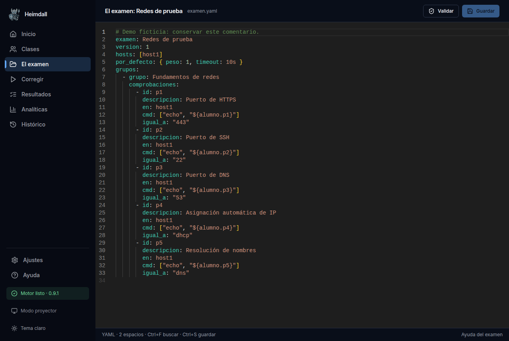
2. Validación
El motor señala el error y conserva el fichero anterior.
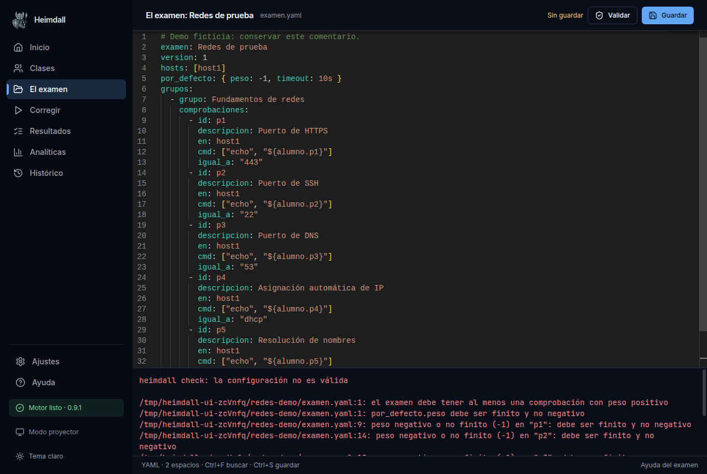
3. Preparar la corrección
Examen y clase, contraseña, recuadro de modo examen y alumnos a evaluar.
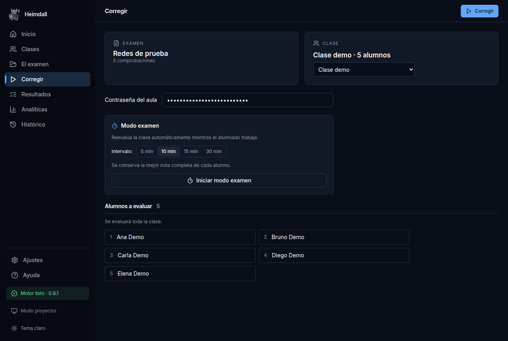
4. Resultados: lista
Notas verdes y rojas. Explicación de estados y filtros plegados.
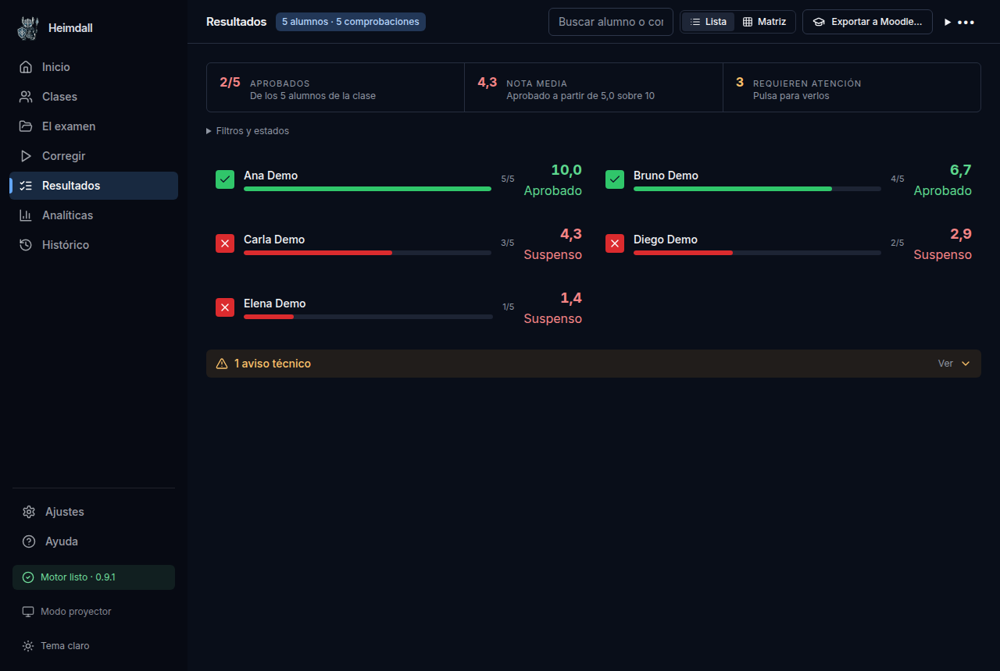
5. Resultados: matriz
Comprobaciones por alumno con la nota coloreada al pie.
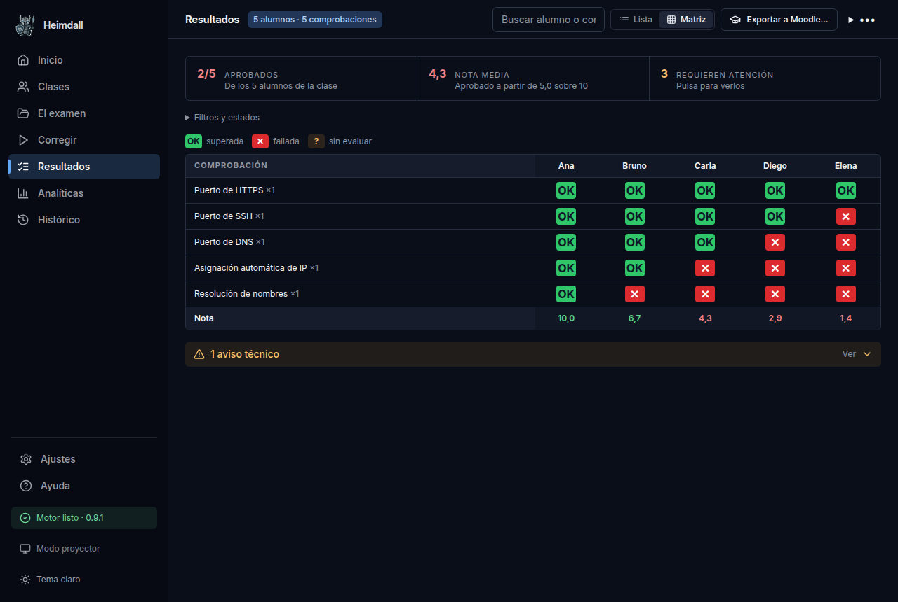
6. Detalle del alumno
Comprobaciones agrupadas; la evidencia se abre al pulsar cada una.
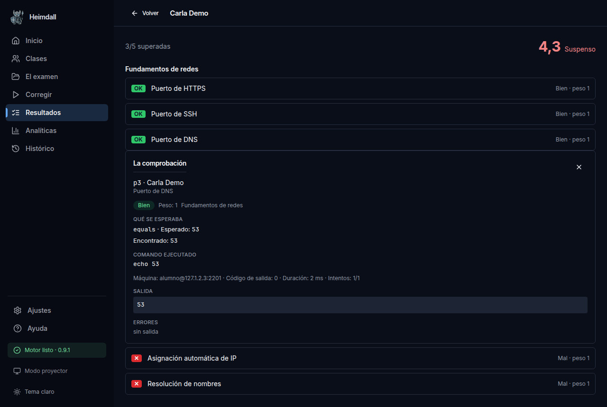
7. Analíticas
Atención prioritaria, objetivos fallados, distribución y éxito por grupo.
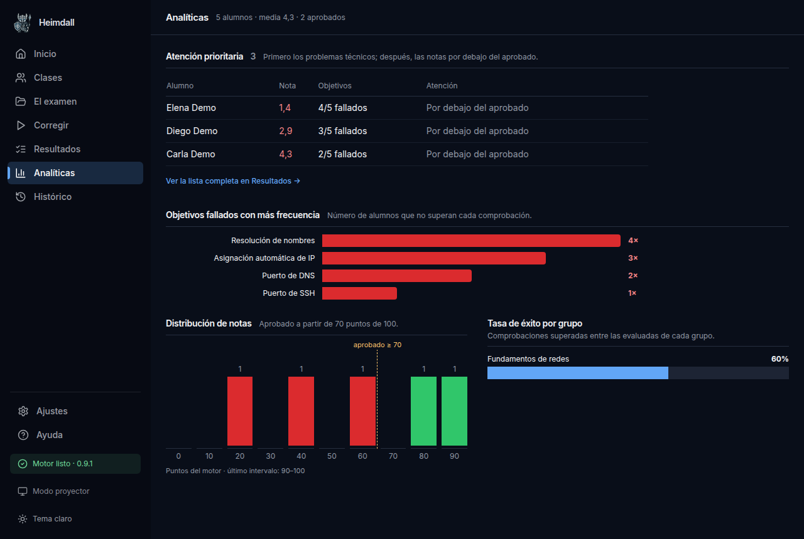
8. Vista previa de notas
Ejemplos de conversión con la escala y el aprobado elegidos.
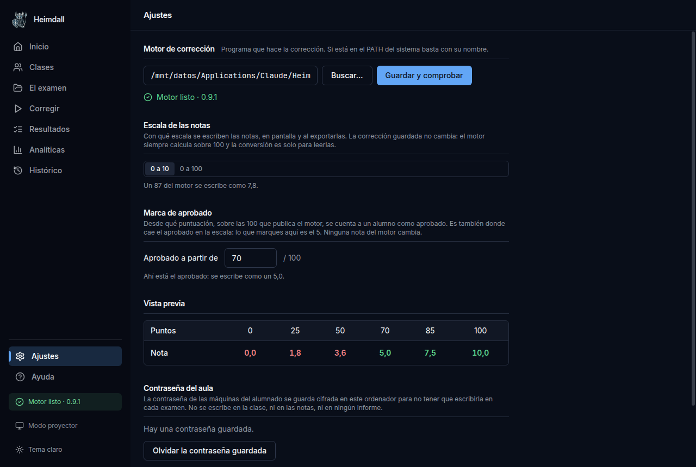
10. Clase habitual
Usuario común y puerto 22 oculto. Las excepciones siguen accesibles.
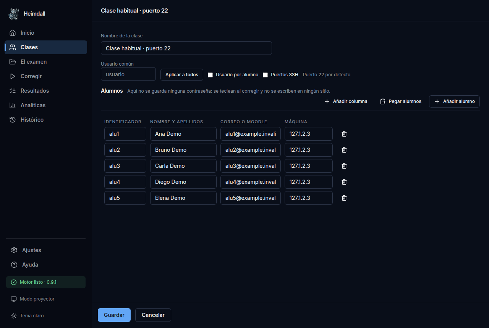
11. Proyector
Notas y matriz ampliadas, sin barra lateral, exportaciones ni filtros.
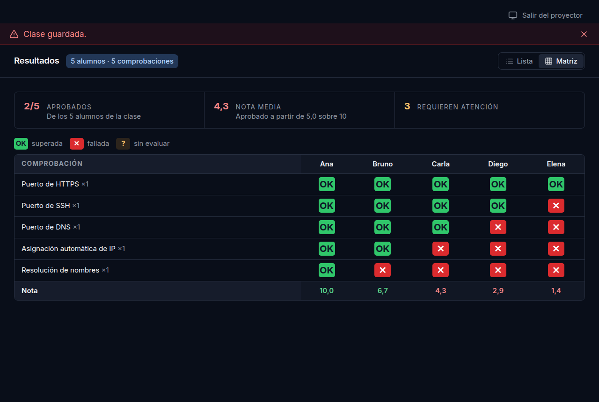
12. Tema claro: matriz
La misma información con contraste en el tema claro.
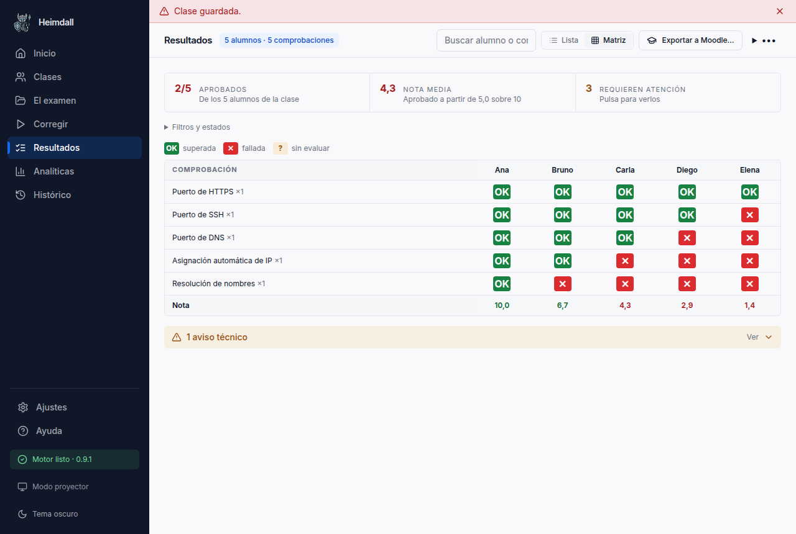
13. Tema claro: editor
Resaltado YAML adaptado al tema.
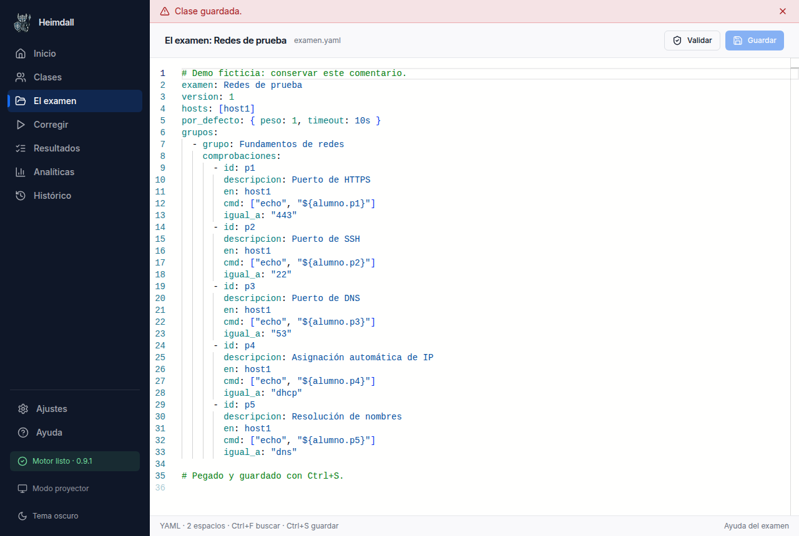
14. Una máquina inaccesible
Elena queda sin evaluar, con la causa visible y sin nota cero.
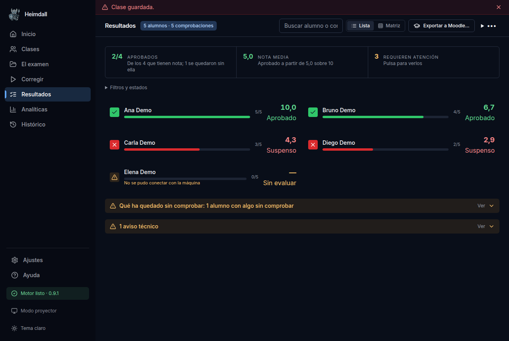
15. Analíticas con incidencia
El problema técnico aparece primero y queda fuera del histograma.
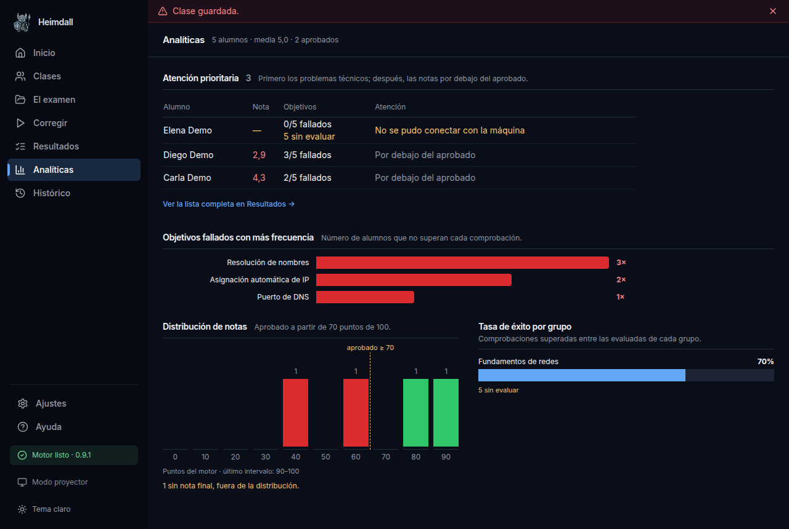
16. Modo examen activo
Primera ronda real completada y botón para detener las siguientes.
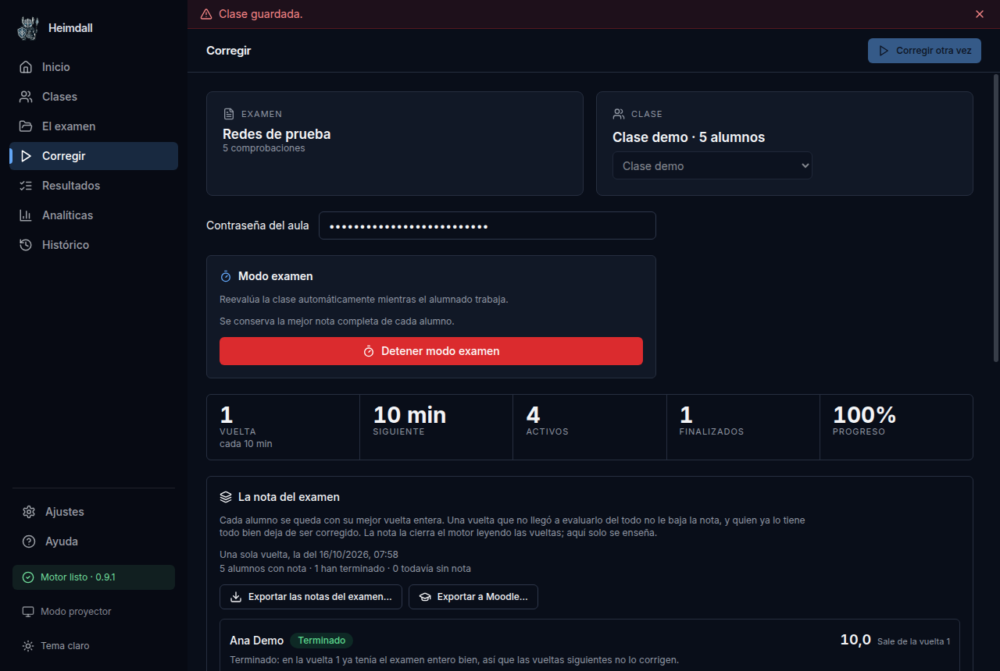